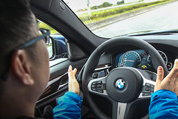

「把手放開，你得到的是一切」
這句話，出自電影《臥虎藏龍》當中，周潤發對章子怡說的一段話。不知為何，在試駕這一代(G30)的5 Series時，總會想起句。
2016年適逢BMW的100歲大壽，若說20世紀是人人追求動力操控的激情年代，那麼隨著BMW一路演進至G世代，100歲所代表的就是一种放手的超脫，不只是形容，而是這代的5 Series真的可以讓駕駛放手了。
放手了，然後呢？
一套進階版的智慧駕駛輔助套件，總代理汎德汽車訂出的選配價，依車型不同約在12萬元左右，當中的配備包括ACC主動車距維持、主動車道維持、路口車流防撞輔助、閃避轉向輔助、車側防撞輔助、前方車流警示、壅塞交通輔助等，分別透過位於車頭、車側後照鏡、前擋玻璃以及車尾等4處的攝影機，搭配前保桿、車頭兩側及車尾兩側的雷達感應器進行作動，以不到車價5%的價錢看來，其實提供許多相當實用的功能。
按下位於方向盤左側的車道維持輔助按鈕，靜待儀表板上的圖示由灰轉綠，表示現在車輛會依循標線行走，駕駛此時已經可以放開雙手、只需控制油門煞車(若是在路面無標線的情況下，則會透過攝影機追隨前車之左右，前車往左即往左，往右亦然)；若再按下旁邊的自動跟車按鍵，駕駛甚至可以連腳都離開踏板，完全進入半自動駕駛模式。
值得一提的是，此代的5 Series無論是車道維持或是自動跟車，其輔助力道都相當和緩，不會出現急加速或是急煞車的形況，對於駕駛者而言，不只是消弭許多讓出主控權的不安，更可以快速地靜下心享受自動駕駛帶來的便利，不過，原廠還是強調駕駛者的雙手要放在方向盤上，否則過一段時間後，自動駕駛功能就會停止。
然而說到放手，總是讓筆者有一種不安的感覺，不只是還無法完全相信機器的那種不安，而是想到一個專注於駕馭樂趣100年的品牌，有一天會希望他的消費者嘗試放開方向盤；就像原本專門生產底片膠捲Kodak柯達，當初發明第一臺數位相機時，怎麼樣也想不到這項發明會在未來幾乎毀了自己。當然不是要詛咒傳統汽車產業，未來會步上柯達的後塵。但不管如何，感受到時代巨輪轉動的聲音，又在耳邊悄悄響起。
自動停車系統，看間距、不看標線
接著筆者進行自動停車輔助的測試，只要決定要開始找車位了，即可按下位於排檔桿座旁的自動停車按鈕，此時中控螢幕將切換至車前攝影機，同時只要維持時速35公里以下的速度，車輛會自動評估每個車位的空間是否合適，最後按照中控螢幕的指示，即可自動把車輛停妥，但是經過測試，其單純以車輛間距做判斷標準，並非以停車格的標線為準，因此停車時若至少有一輛前後車作為基準，系統比較不會發生滿是車格卻不會停車的情況。
加大面積的HUD，整合中文道路及導航
另外一個讓筆者相當有感的配備，就是在這代5 Series上所加入的面積更大(增加70%)、解析度更高(約800*400 Pixel)的HUD抬頭顯示器。其可以顯示的資訊相當豐富，除了基本的時速之外，包括路段限速、跟車間距、導航指引，最重要的是，其介面中文化程度非常之高，尤其對於道路名稱的顯示，相當準確。
iDrive 6.0系統主打手勢控制，適應需花時間
此外，此代5 Series也主打iDrive 6.0的中控資訊娛樂系統，主要功能在於可以使用手勢控制，減少駕駛目光離開路面的時間，進而提升行車安全度。而就筆者實際操作的感想而言，手勢操作需要花一些時間適應，主要是要能抓到它攝影機的偵測位置，否則無論怎麼比，它就是毫無反應。但是只要一抓到訣竅，手勢控制就是非常實用、方便的功能，可以透過手指繞圈控制音量、透過「Ya」的手勢操作預設指令，或是運用輕掃的手勢拒接電話等，對於行車便利性實在是大大加分。
話說到這，終於確認雙手緊握方向盤的年代即將成為過去式，而放開手後的萬千世界、才是當前一流車廠的華山之巔，仔細想想，「把手放開，你得到的是一切」這句話，或許是G30 5 Series給每位駕駛者，最沉默的獨白。


-

舒適、又紓壓－BMW MPA性能車款 M550i xDrive試駕體驗
BMW向來就是駕駛樂趣的製造者，就像這次試駕的M550i xDrive，它不像M家族車款那樣隨時處在戰鬥狀態，卻又比一般的BMW擁有更多跑車性格，要快、要慢，完全操之在你，這就是「MPA」的迷人魅力！
-

性能與舒適的均衡點─BMW M Performance Automobiles高性能車款
BMW M Cars，是性能迷眼中不可多得的尤物，不過，少了一點日常代步的實用性。有鑑於此，BMW增加一條兼顧高性能與日常實用性的產品線，於是在2012年正式成立M Performance Automobiles，第一款車就是M135i。
-

BMW 640i Gran Coupé M Sport限量版上市
BMW臺灣總代理汎德汽車，選擇在2017年5月8日透過新聞稿方式宣布，搭載M Sport運動化套件的640i Gran Coupé...
-

風聲走漏，新一代BMW M5馬力突破600匹、改搭8速自排？
根據外媒流出的消息顯示，底盤代號F90的新一代BMW M5，將沿用F10 M5的動力單元，最大馬力有望突破600匹...
-

把手放開，你得到的是一切─BMW 530i M Sport試駕
「把手放開，你得到的是一切」這句話，出自電影《臥虎藏龍》。2016年適逢BMW的100歲大壽，隨著BMW一路演進至G世代...
-
輕功了得─BMW 530i M Sport試駕，動力操控篇
身為車壇龍頭大老的BMW，對於「練輕功」有著相當深入的刻劃，不僅僅是針對M Power性能部隊、抑或是MPA車型，乃至於一般車型在面臨世代更迭...

©2017 MediaBrilliance System Corporation. All Rights Reserved.